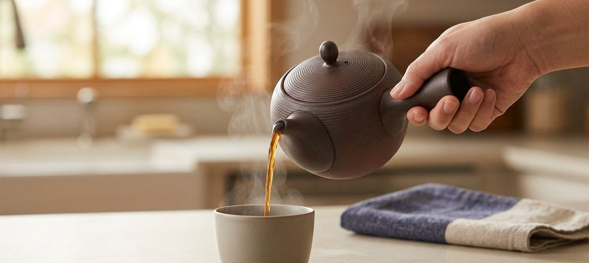
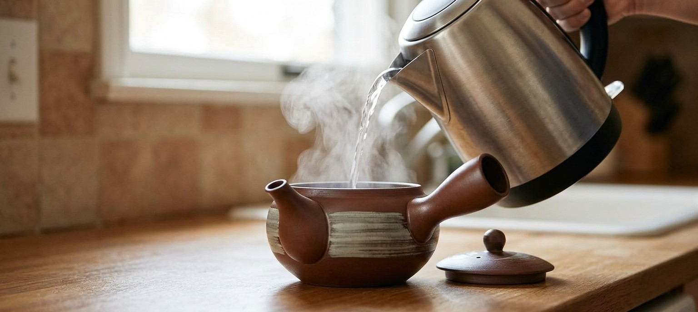
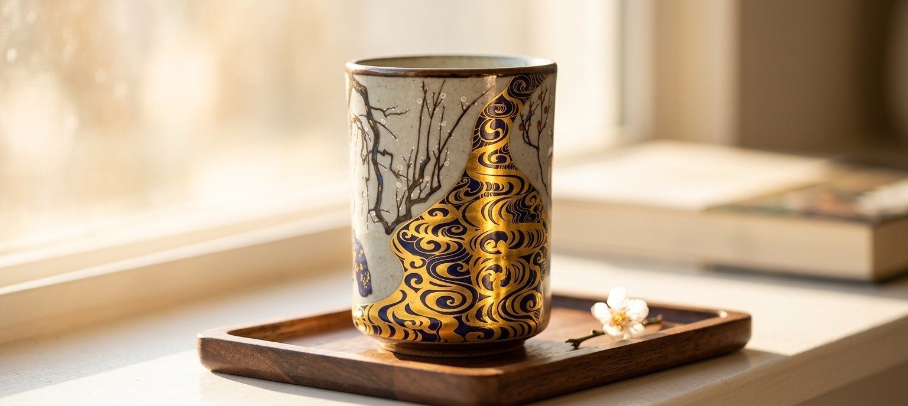
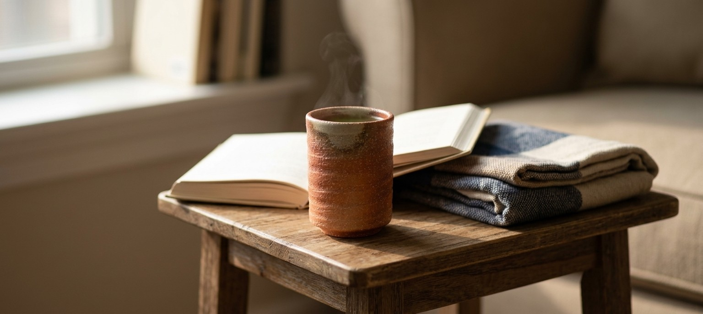

Two teapots and two cups, from four different kilns, chosen for four different reasons -- one changes how the tea itself tastes, one is built to take boiling water without a second thought, one is meant to be looked at as much as used, and one is never glazed the same way twice. Here's what each one is actually for.
This isn't about the shape -- it's the clay itself. Tokoname, one of Japan's oldest pottery towns, is known for unglazed clay naturally rich in iron oxide. That iron reacts with the tannins in brewed tea, which measurably softens bitterness and astringency, so the same leaves taste rounder out of this pot than out of glass or metal. The teapot has an unglazed dark clay body with fine hand-thrown ridge lines circling it, a built-in clay strainer at the spout so loose leaves stay out of your cup, and comes from a listing with real numbers behind it: 4.6 stars across 231 reviews, Amazon's Choice, 50+ bought in the past month.
As an Amazon Associate, I earn from qualifying purchases.
Banko-yaki, fired in Yokkaichi, Mie Prefecture, is the tradition Japan has historically turned to for cookware that takes direct heat -- the same clay family behind donabe hot pots and stovetop kettles. This teapot's listing states its ceramic is specifically fired for heat resistance, which is the honest reason to pour straight-from-the-kettle boiling water into it without the hesitation a delicate glazed pot might earn. The two-tone surface -- warm brown clay with a pale, loosely brushed band swept across the lower body -- is a genuine hand-applied hakeme brush technique, not a printed pattern. At time of writing, this listing showed only 3 left in stock and carries a 4.4-star rating across 47 reviews.

As an Amazon Associate, I earn from qualifying purchases.
Kutani-yaki traces back to 1655 in what's now Ishikawa Prefecture, and this cup uses kinrande -- gold-leaf overglaze work, the same family of technique that helped "Kutani" become a name recognized at 19th-century European expositions. One face carries a plain grey crackle glaze with a hand-painted plum branch; the other is covered in a bold gold-and-cobalt wave pattern that genuinely catches and glints in real light, which is the honest reason to put it somewhere it'll see sun rather than tuck it in a cabinet. Real gold, applied under the glaze rather than painted on top, so it won't rub off with normal use (avoid the microwave, per the listing). 4.7 stars across 191 reviews, and only 4 left in stock at time of writing.

As an Amazon Associate, I earn from qualifying purchases.
Shigaraki-yaki is one of Japan's six ancient kilns, fired since medieval times using sandy local clay from the shores of Lake Biwa. This cup's pale ash glaze isn't applied evenly by hand -- it happens during wood-kiln firing, where airborne ash settles unevenly across the surface and melts into a natural glaze exactly where it happens to land, leaving the rest of the body as bare, speckled orange-red clay. No two cups from a firing are ever glazed the same way, which is the entire wabi-sabi premise: the irregularity is the craftsmanship, not a defect. The walls are genuinely thick, which keeps a hot drink hot for longer and makes the cup comfortable to hold without a handle. 4.7 stars across 18 reviews, sold as a set of two, and only 2 left in stock at time of writing.

As an Amazon Associate, I earn from qualifying purchases.
The two teapots on this page aren't competing with each other -- one is chosen for what it does to the tea's flavor, the other for what it can take straight off the stove without complaint. The two cups aren't competing either: one earns its place by catching light, the other by never looking the same twice. None of the four is the "best" piece of Japanese tea ware; each is here because it solves a specific, honestly stated problem, or answers to a specific, honestly stated feeling.
This page contains affiliate links -- if you buy through one, it costs you nothing extra and helps support this site. Stock levels noted above (3 units for the Banko teapot, 4 for the Kutani cup, 2 for the Shigaraki set) were accurate at time of writing and can change. The iron-tannin reaction described for the Tokoname teapot is a general property of iron-rich unglazed clay, not a lab measurement of this specific pot. Banko-yaki's heat-resistant reputation is a well-documented regional characteristic (the same clay family used for donabe hot pots), stated on this product's own listing as a heat-resistant ceramic, not independently lab-tested by us. The 1655 founding date and kinrande gold-leaf technique are documented Kutani-yaki history, independent of this specific cup's own age or provenance.